건축산업기사 (2006-08-16 기출문제)
1과목: 건축계획
1. 다음의 각종 상점의 방위에 대한 설명 중 틀린것은?
- 음식점 : 도로의 남측에 위치하는 것이 좋다.
- 식료품점 : 강한 석양은 상품을 변색시키므로 서향을 피한다.
- 서점 : 가급적 도로의 북측이나 동측을 선택한다.
- 부인용품점 : 오후에 그늘이 지지 않는 방향으로 하는 것이 좋다.
(정답률: 58%)

2. 사무소건축소에서 화장실의 위치에 대한 설명중 부적당한 것은?
- 각 사무실에서 동선이 간단할 것
- 계단실, 홀 등에 근접시킬 것
- 집중해 있지 말고 되도록 각 층의3개소 이상에 분산 시킬 것
- 각 층마다 공통의 위치에 있을 것
(정답률: 80%)
3. 생활방식을 고려한 새로운 주택설계 방향이 아닌 것은?
- 생활의 쾌적함 증대
- 주거면적의 적정화 및 가사노동의 경감
- 가족본위의 주거
- 생활관습에 맞는 좌식선호
(정답률: 75%)
4. 단독주택의 부엌 유형에 대한 설명 중 틀린것은?
- 일렬형은 설비기구가 많은 경우에 동선이 길어지는 경향이 있으므로 소규모 주택에 적합하다.
- ㄷ형은 평면계획상 외부로 통하는 출입구의 설치는 가능하나 작업동선이 긴 단점이 있다.
- ㄱ자형은 작업동선이 효율적이지만 여유 공간이 많이 남기 때문에 식사실과 함께 이용할 경우에 적합하다.
- 병렬형은 일렬형에 비하여 작업동선이 줄어들기는하지만, 작업시 몸을 앞뒤로 바꾸어야 하는 불편이 있다.
(정답률: 53%)
5. 공장건축의 작업장 레이아웃(lay out)에 관한 설명 중 옳지 않은 것은?
- 고정식 레이아웃은 선박 등에 적용된다.
- 제품중심의 레이아웃은 생산에 필요한 모든 공정, 기계 기구를 제품의 흐름에 따라배치 하는 방식이다.
- 공정중심의 레이아웃은 대량 생산에 적합 하며,공정간의 시간적,수량적 생산균형을 이룰 수 있다.
- 고정식 레이아웃은 주가 되는 재료나 조립부품을 고정된 장소에 두고, 사람이나 기계가 그 장소로 이동해가서 작업을 행하는 방식이다.
(정답률: 83%)
6. 주택의 평면계획에 관한 설명 중 옳지 않은 것은?
- 사적인 공간은 정적이고 독립성이 있어야 한다.
- 현관의 위치결정 요소로는 도로와의 관계, 방위, 대지의 형태 등이 있다.
- 부엌은 음식물이 상하기 쉬우므로 남향으로 하여서는 안된다.
- 부엌의 작업대는 준비, 조리, 가열, 배선의 작업순서를 고려하여 배열한다.
(정답률: 71%)
7. 상점의 판매형식 중 대면판매에 대한 설명으로 옳지 않은 것은?
- 상품의 설명을 하기에 편리하다.
- 판매원의 정위치를 정하기가 용이하다.
- 판매원에 의해 통로가 소요되므로 진열 면적이 감소된다.
- 충동적 구매와 선택이 용이하다.
(정답률: 64%)
8. 다음의 단층교사에 대한 설명 중 옳지 않은 것은?
- 학습활동을 실외에 연장할 수 있다.
- 재해 시 피난이 유리하다.
- 부지의 이용률이 높다.
- 채광 및 환기가 유리하다.
(정답률: 59%)
9. 다음 중 쇼윈도(show-window)의 현휘방지 방법으로 적당하지 않은 것은?
- 해가리개(차양)로 일사를 막는다.
- 유리를 사면으로 설치한다.
- 해가리개의 접는 장치에 의해 실내를 어둡게 한다.
- 곡면유리를 사용한다.
(정답률: 58%)
10. 경사지를 적절히 이용할 수 있으며, 각호마다 전용의 정원을 갖는 주택형식은?
- 타운 하우스(town house)
- 로우 하우스(row house)
- 테라스 하우스(terrace house)
- 파티오 하우스(patio house)
(정답률: 67%)
11. 사무소건축의 기준층에서의 유효율(rentableratio)로 가장 알맞은 것은?
- 30%
- 50%
- 65%
- 80%
(정답률: 44%)
12. 사무소의 분류 중 세종로 정부종합청사와 같은 행정관 청은 어느 분류에 속하는가?
- 대여사무소
- 준대여사무소
- 준전용사무소
- 전용사무소
(정답률: 60%)
13. 주택의 거실 평면 계획에 대한 설명 중 옳지 않은 것은?
- 통로로서의 이용을 원활하게 하기 위해 가급적 각실의 중심에 배치한다.
- 독립성 유지를 위하여 가급적 한쪽 벽만을 타실과 접속시킴으로써 출입구를 설치한다.
- 침실과는 가급적 대칭적인 위치에 둔다.
- 거실의 연장을 위하여 가급적 정원 사이에 테라스를 둔다.
(정답률: 53%)
14. 사무소건축계획에서 코어시스템(core system)을 채용하는 이유로 가장 부적당한 것은?
- 구조적인 이점
- 임대면적의 증가
- 피난상의 유리
- 설비계통의 집중
(정답률: 36%)
15. 다음의 학교운영방식에 대한 설명 중 옳지 않은 것은?
- 종합교실형 : 학생의 이동이 없어 학급에서 안정적인 분위기를 가질 수 있다.
- 교과교실형 : 일반교실은 각 학년에 하나씩할당되고,그 외에 특별교실을 갖는다.
- 달톤형 : 학급, 학생의 구분이 없으며 학생들은 각자의 능력에 맞게 교과를 선택한다.
- 플래툰형 : 교사의 수와 적당한 시설이 없으면 실시가 곤란하다.
(정답률: 53%)
16. 음악실이 주당 28시간 사용되고 있는 중학교에서 1주간의 평균 수업시간은? (단, 음악실의 이용률은 80%임)
- 22시간
- 23시간
- 34시간
- 35시간
(정답률: 31%)
17. 상점계획에 관한 기술 중 부적당한 것은?
- 점내의 상품이 통행인으로부터 잘 보이게 한다.
- 점내의 손님동선은 되도록 짧게 한다.
- 점원의 동선은 짧고 능률적이 될 수 있도록 한다.
- 점원과 손님의 동선은 가급적 분리시킨다.
(정답률: 74%)
18. 아파트 평면형식 중 계단실(홀)형에 대한 설명으로 옳지 않은 것은?
- 주호내의 주거성과 독립성이 좋다.
- 부지의 이용률이 가장 높으며, 많은 주호를 집중시킬 수 있다.
- 동선이 짧으므로 출입이 편하다.
- 엘리베이터의 이용률이 낮다.
(정답률: 81%)
19. 다음 중 사무소 건축의 개방식 배치에 관한 설명으로 옳지 않은 것은?
- 독립성과 쾌적성이 좋다.
- 소음이 발생하기 쉽다.
- 전면적을 유용하게 이용할 수 있다.
- 방의 길이나 깊이에 변화를 줄 수 있다.
(정답률: 74%)
20. 공장건축의 형식 중 파빌리언 타입(pavilion type)에 대한 설명으로 가장 부적당한 것은?
- 각각의 건물에 대해 건축형식 및 구조를 각기다르게 할 수 없다.
- 통풍 및 채광이 양호하다.
- 각 동의 건설을 병행할 수 있으므로 조기완성이 가능하다.
- 공장의 신설, 확장이 비교적 용이하다.
(정답률: 60%)
2과목: 건축시공
21. 다음 시멘트의 화학적 구성물 중 재령 1일 이내의 조기강도발현에 가장 많은 영향을 미치는 것은?
- 3CaOㆍSiO2(C3S)
- 2CaOㆍSiO2(C2S)
- 3CaOㆍAl2O3(C3A)
- 4CaOㆍAl2O3ㆍFe2O3(C4AF)
(정답률: 43%)
22. 실리카질 시멘트(silica cement)의 특징으로 틀린 것은?
- 초기강도는 크나, 장기강도는 감소한다.
- 화학적 저항성이 크고 내수, 내해수성이 크다.
- 알카리 골재반응에 의한 팽창의 저지에 유리하다.
- 블리딩이 감소하고, 워커빌리티를 증가시킬 수 있다.
(정답률: 58%)
23. 시멘트 액체 방수와 비교한 아스팔트방수의 특징에 관한 설명 중 옳지 않은 것은?
- 시공시일이 길게 걸린다.
- 결함부 발견이 용이하다.
- 외기에 대한 영향이 적다.
- 공사비가 비싸다.
(정답률: 38%)
24. 플라스틱 바름바닥재 중 공기중의 수분과 화학반응하는 경우 저온과 저습에서 경화가 늦으므로 5℃ 이하에 서 촉진제를 사용하는 것은?
- 에폭시수지
- 아크릴수지
- 폴리우레탄
- 클로로프렌고무
(정답률: 50%)
25. 홈통공사에 관한 기술 중 옳지 않은 것은?
- 선홈통은 미관상 콘크리트 속에 설치한다.
- 처마홈통의 양 갓은 둥글게 감되,안감기를 원칙으로 한다.
- 선홈통의 맞붙임은 거멀접기로 하고,수밀하게 눌러 붙인다.
- 처마홈통, 이중홈통, 끝홈통 및 깔때기 등의 내부는 정제 콜타르를 칠한다.
(정답률: 43%)
26. 지명경쟁입찰을 선택하는 가장 중요한 이유는?
- 양질의 시공결과 기대
- 공사비의 절감
- 준공기일의 단축
- 공사감리의 관리
(정답률: 80%)
27. 콘크리트 거푸집공사에서 세퍼레이터(separater)를 사용하는 목적으로 옳은 것은?
- 거푸집과 거푸집의 간격을 바르게 유지하고 변형을막아준다.
- 철근의 간격을 바르게 유지한다.
- 거푸집널을 지지하여 그 하중을 멍에 장선 및 띠장받이에 전달한다.
- 거푸집 제거를 편리하게 하기 위해 사용한다.
(정답률: 50%)
28. 다음의 창호에 사용되는 창호철물의 연결이 적당치 않은 것은?
- 미닫이문 - 호차와 레일
- 오르내리창 - 크레센트와 창도르래
- 양여닫이문 - 도어행거와 갈고리 걸쇠
- 외여닫이문 - 도어클로저와 자유정첩
(정답률: 22%)
29. 거푸집공사에서 슬라이딩 폼(sliding form)에 관한 기술 중 틀린 것은?
- 공사기한을 단축할 수 있다.
- 연속적으로 콘크리트를 부어넣으므로 콘크리트의 일체성이 확보된다.
- 사일로(silo) 등의 공사에는 부적당하다.
- 내외부의 비계가 불필요하다.
(정답률: 61%)
30. 2종 표준벽돌(표준형)을 사용하여 줄눈 10mm로 시공할 때 1.5B 벽돌벽의 두께는?
- 190mm
- 210mm
- 290mm
- 300mm
(정답률: 59%)
31. 다음은 건설공사의 정액 일식도급 계약방식을 설명한 내용이다. 적당하지 않은 사항은?
- 입찰 전에 도면,시방서, 견적서 등이 완비되어야 한다.
- 발주자와 시공자 사이에 설계변경으로 인한 공사비증감이나 공사의 질에 대한 의견차이로 인해 분쟁이 발생되기도 한다.
- 긴급공사일 때 유리한 계약방식이다.
- 발주자는 공사완공시까지의 총공사비를 계약과 동시에 예측할 수 있다.
(정답률: 25%)
32. 다음 공사 중 가설공사에 해당되지 않는 것은?
- 비계 설치
- 규준틀 설치
- 현장사무실 축조
- 거푸집 설치
(정답률: 48%)
33. 그림과 같은 철근 콘크리트 기초에 사용된 콘크리트량 으로 적당한 것은? (단, 단위 mm)
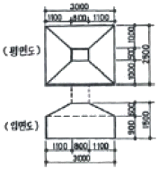
- 4.5m3
- 6.7m3
- 8.7m3
- 10.5m3
(정답률: 32%)
34. 창호공사의 시공방법으로 옳지 않은 것은?
- 나무 퍼티못으로 양끝을 누르고 중간15cm마다 박는다.
- 강제창호의 설치는 먼저세우기와 중세우기가 있으나 보통 먼저세우기로 한다.
- 알루미늄 새시는 알칼리에 약하므로 모르타르 등에 직접 접촉하지 않는다.
- 알루미늄 새시는 녹이 나지 않으므로 도장이 필요없다.
(정답률: 14%)
35. 프리팩트 콘크리트 말뚝중 파이프 회전축의 선단에 커터를 장치하여 흙을 뒤섞으며 지중으로 파들어간 다음, 다시 회전시켜 빼내면서 모르타르를 회전봉 선단에서분출시켜 소일 콘크리트말뚝을 형성하는 방법은?
- PC 말뚝
- CIP 말뚝
- PIP 말뚝
- MIP 말뚝
(정답률: 38%)
36. 콘크리트의 슬럼프 테스트는 무엇을 측정하는 것인가?
- 콘크리트의 강도
- 콘크리트의 시공연도
- 골재의 조립률
- 시멘트와 모래의 비율
(정답률: 67%)
37. 지하층 굴토 공사시 사용되는 계측 장비의 계측내용을 연결한 것 중 옳지 않은 것은?
- 간극 수압 - Piezo meter
- 인접건물의 균열 - Crack gauge
- 지반의 침하 - Inclino meter
- 흙막이의 변형 - Strain gauge
(정답률: 25%)
38. 지내력 시험에 관한 기술로서 틀린 것은?
- 하중시험용 재하판은 정방형 또는 원형(면적 0.2m2)의 것을 표준으로 한다.
- 침하의 증가가 2시간에 0.1mm의 비율 이하가 될 때 침하가 정지한 것으로 한다.
- 장기하중에 대한 허용지내력은 단기하중의 허용 지내력의 1/2 이다.
- 매회 재하는 10t 이하 또는 예정파괴 하중의 1/2이하로 한다.
(정답률: 48%)
39. 다음 중 수량산출시의 할증율로 맞는 것은?
- 이형철근 : 3%
- 원형철근 : 7%
- 대형형강 : 5%
- 강판 : 5%
(정답률: 40%)
40. 합성고분자계 시트 방수공사 중 합성수지계 시트를 이용하여 전면밀착으로 하는 공법을 나타내는 기호는?
- S-RuF
- S-PIF
- S-PIM
- S-PrF
(정답률: 50%)
3과목: 건축구조
41. 그림과 같은 구조물의 판정 결과는?
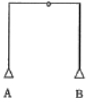
- 정정
- 1차 부정정
- 2차 부정정
- 3차 부정정
(정답률: 53%)
42. 강도설계법에서 직접설계법을 사용하여 슬래브를 설계할 때 제한사항에 대한 설명으로 옳지 않은 것은?
- 각 방향으로 3경간 이상이 연속되어야 한다.
- 모든 하중은 연직하중으로서 슬래브판 전체에 등분포되는 것으로 간주한다.
- 각방향으로 연속한 받침부 중심간 경간 길이의 차이는 긴 경간의 1/3 이하이어야 한다.
- 슬래브판들은 단변 경간에 대한 장변 경간의 비가 3이하인 직사각형이어야 한다.
(정답률: 14%)
43. 길이가 4m, 단면적이 10cm2인 어떤 재료를 20tf의 힘으로 당겼을 때 1cm가 늘어났다. 이 재료의 탄성계수는?
- 800000 kgf/cm2
- 1400000 kgf/cm2
- 1600000 kgf/cm2
- 2100000 kgf/cm2
(정답률: 50%)
44. 기초판 크기가 3.5m×3.5m 인 정방형 독립기초에서 기초저면에 인장력이 생기지 않으려면 편심거리(e)는 최대 얼마 이하로 되어야 하는가?
- 40cm
- 48.5cm
- 53cm
- 58.3cm
(정답률: 16%)
45. 그림과 같은 단순보에서 A단의 수직반력은?
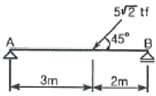
- 2 tf
- 3 tf
- 4 tf
- 5 tf
(정답률: 37%)
46. 철근콘크리트구조의 특징에 대한 설명 중 옳지 않은 것은?
- 철근과 콘크리트가 일체가 되어 내구적이다.
- 철근이 콘크리트에 의해 피복되므로 내화적이다.
- 부재의 단면과 중량이 크다.
- 건식구조이므로 동절기 공사가 용이하다.
(정답률: 57%)
47. 그림과 같은 직사각형 단면의 하단축인 X축에 대한 단면2차 모멘트 Ix 는?
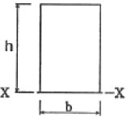
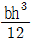
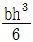
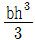
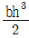
(정답률: 6%)
48. 그림과 같은 단순보에서 C점의 최대처짐량은?
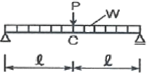
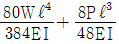
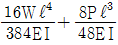
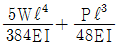
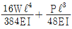
(정답률: 10%)
49. 다음 구조물에서 절점 O는 이동하지 않으며 A, B, C는 고정 상태일 때 C점의 휨모멘트는? (단, ○안의 수는 강비임)
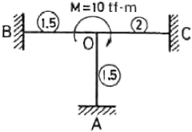
- 1.0 tfㆍm
- 2.0 tfㆍm
- 4.0 tfㆍm
- 8.0 tfㆍm
(정답률: 50%)
50. 지속하중으로 인하여 콘크리트에 일어나는 장기변형을 의미하는 용어는?
- 크리프
- 건조수축
- 응력
- 전단변형
(정답률: 50%)
51. 강도설계법에 의한 철근콘크리트 단근보의 설계시 균형철근비 ρb가 0.0228인 경우 이 보의 최대 철근비는?
- 0.0124
- 0.0171
- 0.02⑤
- 0.0253
(정답률: 54%)
52. 지름이 20cm인 원형단면의 단면계수는?
- 98.17 cm3
- 392.70 cm3
- 785.40 cm3
- 1333.33 cm3
(정답률: 45%)
53. 다음 중 부동침하의 원인과 가장 관계가 먼 것은?
- 지하층 설치
- 일부 지정
- 이질 지층
- 지하수위 변경
(정답률: 50%)
54. 다음 구조물에서 A지점의 휨모멘트 값은?
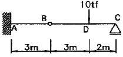
- -6 tfㆍm
- -8 tfㆍm
- -10 tfㆍm
- -12 tfㆍm
(정답률: 25%)
55. 강도설계법에서 철근의 기본정착 길이가 잘못된 것은?(관련 규정 개정전 문제로 여기서는 기존 정답인 4번을 누르면 정답 처리됩니다. 자세한 내용은 해설을 참고하세요.)
- 인장이형철근 :
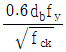
- 압축이형철근 :
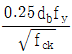
- 표준갈고리를 갖는 인장이형철근 :
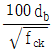
- 표준갈고리를 갖는 압축이형철근 :
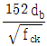
(정답률: 36%)
56. 지름 30cm인 기성콘크리트말뚝을 박으려고 한다. 최소 중심 간격으로 가장 적당한 것은?
- 60cm
- 75cm
- 90cm
- 100cm
(정답률: 58%)
57. 띠철근 압축부재 단면의 최소 치수는?
- 100 mm
- 150 mm
- 200 mm
- 300 mm
(정답률: 36%)
58. 극한강도설계법에 의한 철근콘크리트 구조물 설계시소요강도에 대한 하중조합 중 틀린 것은? (단, D : 고정하중, L : 활하중, W : 풍하중, E : 지진하중)
- U ＝ 1.4D＋1.7L
- U ＝ 0.75(1.4D＋1.7L＋1.7W)
- U ＝ 0.9D＋1.3E
- U ＝ 0.75(1.4D＋1.7L＋1.8E)
(정답률: 31%)
59. 그림과 같은 단근 장방형보에 대하여 균형철근비 상태일때의 압축단에서 중립축까지의 길이 Cb는? (단, 콘크리트의 fck ＝ 24MPa, 철근의 fy ＝ 400MPa, ES = 2.0×1⑤ MPa 이다.)
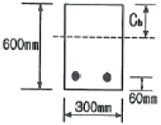
- 306mm
- 324mm
- 360mm
- 520mm
(정답률: 53%)
60. 현장치기 콘크리트로써 흙에 접하여 콘크리트를 친 후 영구히 흙에 묻혀 있는 콘크리트의 경우, 최소피복두께는?
- 20mm
- 40mm
- 80mm
- 100mm
(정답률: 50%)
4과목: 건축설비
61. 다음의 LPG에 대한 설명 중 틀린 것은?
- 공기보다 무겁다.
- 액화하면 용적은 1/250로 된다.
- 상압에서는 액체이지만 압력을 가하면 기화된다.
- 액화석유가스를 말한다.
(정답률: 62%)
62. 손실열량이 10000Kcal/h인 실에서 설치해야할 온수방열기의 소요절(section)수로 적당한 것은? (단, 5세주 높이 600mm 인 방열기 1절의 방열면적은 0.18m2이고 온수 및 실내온도는 표준상태임)
- 34절
- 65절
- 124절
- 195절
(정답률: 27%)
63. 구조가 간단하고 가격이 싸므로 건축설비에서 가장 많이 사용되는 전동기는?
- 유도전동기
- 동기전동기
- 정류자전동기
- 직류전동기
(정답률: 29%)
64. 다음 중 트랩의 유효 봉수깊이로 가장 적당한 것은?
- 10~40mm
- 50~100mm
- 120~150mm
- 200~250mm
(정답률: 53%)
65. 옥내배선의 설계순서로서 옳은 것은?
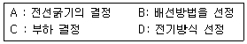
- A - B - C - D
- C - D - B - A
- B - A - D - C
- D - B - A - C
(정답률: 34%)
66. 변전실에 관한 설명 중 옳지 않은 것은?
- 방화구조로 하여야 한다.
- 천장 높이는 고압일 경우 보 아래까지 3.0m 이상이 되어야 한다.
- 출입구의 크기는 기기의 출입이 용이하도록 한다.
- 가능한 한 부하의 중심에 가깝고 배전에 편리한 장소에 위치시킨다.
(정답률: 27%)
67. 다음의 급수방식에 대한 설명 중 옳은 것은?
- 수도직결 방식은 공급압력이 일정하여 고층건물에 주로 사용된다.
- 고가수조 방식은 수질오염성이 가장 낮은 방식으로 단수시 일정 시간 동안 급수가 가능하다.
- 압력탱크 방식은 경제적이며 공급압력이 일정하다.
- 탱크가 없는 부스터 방식은 정교한 제어가 필요하며 정전시 급수가 불가능하다.
(정답률: 47%)
68. 세면기, 대변기, 소변기에 부착하여 바닥밑의 배수횡지관에 접속할 때 사용되며 사이펀 작용을 일으키기가 쉬운 형태로 봉수가 쉽게 파괴되는 트랩은?
- 그리이스 트랩
- S 트랩
- 드럼 트랩
- 벨 트랩
(정답률: 69%)
69. 건축물의 외벽, 창, 지붕 등에 설치하여 인접 건물에 화재가 발생했을 때 수막을 형성함으로써 화재의 연소를 방지하는 설비는?
- 드렌처 설비
- 스프링클러 설비
- 옥내소화전 설비
- 옥외소화전 설비
(정답률: 73%)
70. 옥내 소화전이 2, 3층에 각각 2개씩 설치되어 있고, 1층에 3개 설치되어 있다. 이 건물의 소화용 수원의 최소 저수량은?(2021년 04월 01일 개정된 규정 적용됨)
- 5.2 m3
- 7.8 m3
- 9.6 m3
- 10.4 m3
(정답률: 59%)
71. 건조공기 1kg의 습공기 속에 현열 및 잠열의 형태로 포함되는 열량을 엔탈피라 한다. 건구온도 30℃ 절대습도 0.0⑤kg/kg(DA)인 공기의 엔탈피는 얼마인가?
- 5.75 Kcal/kg(DA)
- 10.25 Kcal/kg(DA)
- 15.45 Kcal/kg(DA)
- 20.55 Kcal/kg(DA)
(정답률: 15%)
72. 전로에 과전류가 흐르면 자동적으로 전로를 차단하는 자동차단기는 정격전류의 몇% 에서 끊어지게 되어 있는가?
- 110%
- 120%
- 130%
- 140%
(정답률: 64%)
73. 기구의 소요압력이 0.7kg/cm2이고 수전 높이가 10m일 때 수도 본관에는 최소 얼마의 압력이 있어야 급수가 가능한가? (단, 배관 중 마찰손실은 0.4kg/cm2임)
- 0.7kg/cm2
- 1.1kg/cm2
- 1.7kg/cm2
- 2.1kg/cm2
(정답률: 43%)
74. 복사 난방에 대한 설명 중 옳지 않은 것은?
- 실내의 온도분포가 균등하고 쾌감도가 높다.
- 평균온도가 낮기 때문에 동일 방열량에 대해 손실열량이 크다.
- 구조체를 덥히게 되므로 예열시간이 길어져 일시적으로 쓰는 방에는 부적당하다.
- 하자 발견이 어렵고 보수가 어렵다.
(정답률: 60%)
75. 다음 급수기구 중 최저필요압력이 가장 큰 것은?
- 샤워기
- 소변기 세정밸브(벽걸이형 소변기)
- 대변기 세정밸브(블로우아웃식 대변기)
- 일반수전
(정답률: 55%)
76. 다음의 공기조화방식 중 전공기방식에 해당하는 것은?
- 유인유니트방식
- 2중덕트방식
- 팬코일유니트방식
- 패키지유니트방식
(정답률: 39%)
77. 다음 전기설비 기기에 대한 설명 중 틀린것은?
- 변압기 : 수변전설비의 모체가 되는 기기로 전압을 변화시키는 역할을 한다.
- 차단기 : 전로를 자동으로 개폐하여 기기를 보호하는 목적으로 쓰인다.
- 단로기 : 내측에 퓨즈를 부착하고 뚜껑의 개폐로 회로를 개폐하는 스위치로 주로 옥내배선의 인입구에 사용된다.
- 배전반: 회로나 기기를 감시하기 위한 계기류, 계전기류, 개폐기류를 1개소에 집중해서 시설한 것이다.
(정답률: 18%)
78. 다음의 펌프 중 왕복펌프에 속하지 않는 것은?
- 플런저 펌프
- 워싱톤 펌프
- 피스톤 펌프
- 볼류트 펌프
(정답률: 34%)
79. 난방부하 계산시 각 외벽을 통한 손실열량은 방위에 따른 방향계수에 의해 값을 보정하는데, 계수의 값이 큰 것부터 차례로 된 것은?
- 북 ＞ 동, 서 ＞ 남
- 북 ＞ 남 ＞ 동, 서
- 동 ＞ 남, 북 ＞ 서
- 남 ＞ 북 ＞ 동, 서
(정답률: 72%)
80. 다음 중 냉각탑의 설치위치와 가장 관계가 먼 것은?
- 소음이 적은 장소
- 먼지나 매연이 없는 장소
- 통풍이 잘 안되는 장소
- 시공관리의 면적이 충분한 장소
(정답률: 64%)
5과목: 건축관계법규
81. 주차장법 시행령에 따른 부설주차장 설치 대상 시설물 종류 및 설치 기준이 잘못된 것은?
- 제2종 근린생활시설 - 시설면적 300m2당 1대
- 위락시설 - 시설면적 100당m2 1대
- 골프장 - 1홀당 10대
- 옥외수영장 - 정원 15인당 1대
(정답률: 64%)
82. 건축법상 층의 구분이 명확하지 아니한 건축물의 층수 산정시 건축물의 높이 몇 m 마다 하나의 층으로 산정하는가?
- 2.4m
- 3.0m
- 4.0m
- 4.5m
(정답률: 77%)
83. 주차단위구획과 접하지 아니한 차로의 너비를 2.5m 이상으로 할 수 있는 조건과 관계없는 것은?
- 부설주차장
- 자주식주차장
- 건축물식
- 총주차대수의 규모가8대 이하
(정답률: 39%)
84. 건축지도원과 관련이 있는 사항은?
- 시, 군, 읍, 면에 근무하는 공무원
- 건축에 관한 학식이 있는 자로서 건축법에서 정한 자격이 있는 자
- 건축허가 후 건축 중에 있는 건축물의 위법 시공의 단속
- 허가를 받지 않고 용도 변경한 건축물의 단속
(정답률: 30%)
85. 건축물의 바깥쪽에 설치하는 피난계단의 구조 기준으로 옳은 것은?
- 계단의 유효너비는 0.9미터 이상으로 할 것
- 계단으로 통하는 출입구 너비는 2.0미터 이상으로 할 것
- 계단은 방화구조로 하고 지상까지 직접 연결되도록할 것
- 계단으로 통하는 출입구외의 창문 등으로부터 1.5미터 이상의 거리를 두고 설치할 것
(정답률: 39%)
86. 6층 이상의 거실면적의 합계가 9000m2인 공동주택에 설치해야 할 승용승강기의 최소 대수로서 맞는 것은? (단, 8인승을 기준으로 함)
- 5대
- 4대
- 3대
- 2대
(정답률: 27%)
87. 노외주차장의 주차형식에 따른 차로의 최소너비에 관한 규정 중 틀린 것은? (단, 출입구가 2개 이상인 경우)
- 평행주차 : 3.5m
- 교차주차 : 3.5m
- 60°대향주차: 4.5m
- 직각주차 : 6.0m
(정답률: 56%)
88. 건축물의 층수가 4층일 때, 석축인 옹벽의 윗가장자리로부터 건축물의 외벽면까지 띄어야 하는 최소 거리는?
- 1m
- 1.5m
- 2m
- 3m
(정답률: 8%)
89. 배연설비를 하여야 하는 건축물에 설치하여야 하는 배연창의 유효면적은?
- 0.5m2 이상으로 서 그 면적의 합계가 당해 건축물의 바닥면적의 1/200 이상일 것
- 1m2 이상으로서 그 면적의 합계가 당해 건축물의 바닥면적의 1/200 이상일 것
- 0.5m2 이상으로서 그 면적의 합계가 당해 건축물의 바닥면적의 1/100 이상일 것
- 1m2 이상으로서 그 면적의 합계가 당해 건축물의 바닥면적의 1/100 이상일 것
(정답률: 19%)
90. 도시지역안에서 건폐율의 최대한도는 관할구역의 면적 및 인구규모, 용도지역의 특성 등을 감안하여 다음과 같은 범위 안에서 대통령령이 정하는 기준에 따라 특별시ㆍ광역시ㆍ시 또는 군의 조례로 정하도록 되어있다. 다음 중 부적합한 것은?
- 주거지역 : 70% 이하
- 상업지역 : 90% 이하
- 공업지역 : 80% 이하
- 녹지지역 : 20% 이하
(정답률: 41%)
91. 방화구조의 기준을 나타낸 것으로 옳지 않은 것은?
- 철망모르타르로서 그 바름두께가 1.2cm 이상인 것
- 석면시멘트판 또는 석고판 위에 시멘트모르타르 또는 회반죽을 바른 것으로서 그 두께의 합계가 2.5cm 이상인 것
- 시멘트모르타르 위에 타일을 붙인 것으로서 그 두께의 합계가 2.5cm 이상인 것
- 두께 1.2cm 이상의 석고판 위에 석면시멘트판을 붙인 것
(정답률: 48%)
92. 다음 중 노외주차장의 출구를 설치할 수 없는 장소는?
- 노인복지시설 출입구로부터 25m 지점의 도로의 부분
- 중학교 출입구로부터 15m 지점의 도로의 부분
- 사무소 출입구로부터 10m 지점의 도로의 부분
- 초등학교 출입구로부터 18m 지점의 도로의 부분
(정답률: 43%)
93. 비상용승강기 승강장의 구조에 관한 기준으로 옳지 않은 것은?
- 승강장은 각층의 내부와 연결될 수 있도록 하되, 그 출입구(승강로의 출입구를 제외)에는 갑종방화문을 설치할 것
- 벽 및 반자가 실내에 접하는 부분의 마감재료는 불연 재료로 할 것
- 노대 또는 내부를 향하여 열 수 있는 창문을 설치할 것
- 피난층이 있는 승강장의 출입구로부터 도로 또는 공지에 이르는 거리가 30미터 이하일 것
(정답률: 37%)
94. 다음 중 기준에 미달되게 건축물이 있는 대지를 분할할 수 없는 규정에 해당되지 않는 것은?
- 일조 등의 확보를 위한 건축물의 높이제한
- 건축물의 용적률
- 대지와 도로의 관계
- 건축선에 의한 건축제한
(정답률: 28%)
95. 기계식 주차장의 설치기준 중 부적합한 것은?
- 중형기계식 주차장이란 길이 5.5m 이하, 너비 1.85m이하, 높이 1.65m 이하, 무게 1600kg 이하인 자동차를 주차할 수 있는 기계식주차장을 말한다.
- 대형기계식 주차장이란 길이 5.75m 이하, 너비 2.15m 이하, 높이 1.55m 이하, 무게 2200kg 이하인 자동차를 주차할 수 있는 기계식주차장을 말한다.
- 중형기계식 주차장치 출입구의 전면에는 너비 1m이상, 길이 9 5m이상의 전면공지 또는 직경 4m이상의 방향전환장치와 그 방향전환장치에 접한 너비 1m 이상의 여유공지가 있어야 한다.
- 대형기계식 주차장치 출입구의 전면에는 너비 10m이상, 길이 11m 이상의 전면공지 또는 직경 4.5m이상의 방향전환장치와 그 방향전환장치에 접한 너비 1m 이상의 여유공지가 있어야 한다.
(정답률: 20%)
96. 다음 중 바닥면적의 산정방법에 있어 조건에 관계없이 예외규정이 인정되지 않는 부위는?
- 공동주택으로서 지상층에 설치한 어린이 놀이터
- 지상층에 설치한 물탱크
- 공동주택으로서 지상층에 설치한 기계실
- 공동주택의 피로티 부분
(정답률: 42%)
97. 건축물의 용도분류상 단독주택에 해당되지 않는 것은?
- 다중주택
- 다가구주택
- 기숙사
- 공관
(정답률: 56%)
98. 건축법상 주요구조부에 속하지 않는 것은?
- 기둥 및 내력벽
- 바닥 및 보
- 기초 및 토대
- 지붕틀
(정답률: 31%)
99. 노외주차장에 설치할 수 있는 부대시설의 총면적은주차장 총 시설면적의 최대 몇 %를 초과하여서는 안되는가?
- 15%
- 20%
- 25%
- 30%
(정답률: 53%)
100. 다음 중 대지분할의 최소한 면적으로 맞지 않는 것은?
- 녹지지역 : 200m2
- 상업지역 : 180m2
- 공업지역 : 150m2
- 주거지역 : 60m2
(정답률: 48%)
서점은 가급적 도로의 북측이나 동측을 선택하는 것이 좋은데, 이유는 남쪽이나 서쪽에 위치하면 강한 석양으로 인해 책의 표지나 내용이 변색될 수 있기 때문이다. 또한 북쪽이나 동쪽에 위치하면 자연광을 최대한 활용할 수 있어서 전체적으로 밝은 분위기를 유지할 수 있다.